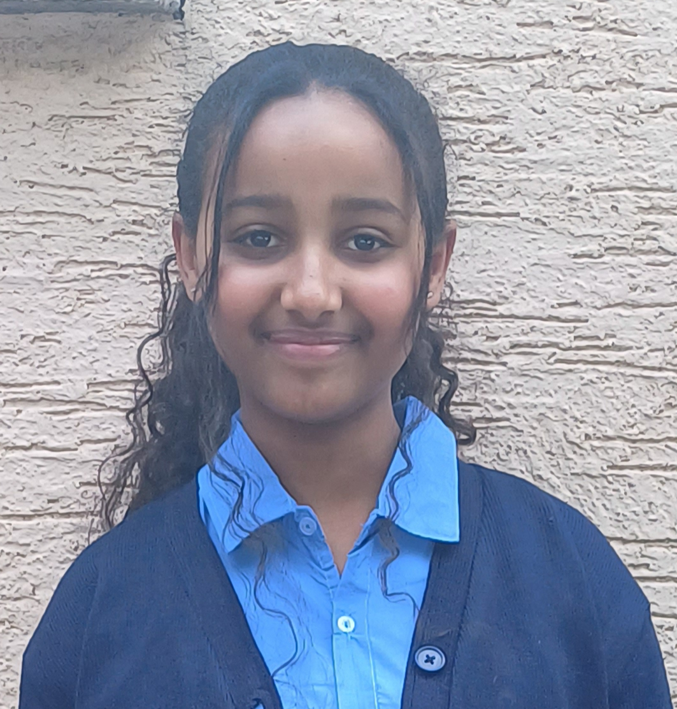

Sena Waktole

Summary
I'm a Grade 9 student taking a web development course.
I enjoy coding and want to become a software engineer.
I'm curious, motivated, and excited to keep learning more about technology.
Education
Completed primary school and currently in Grade 9
Skills
- Basic HTML and CSS
- Building simple web pages
- Problem solving and Logical thinking
- Eagerness to learn new technologies
- Teamwork and Communication
- Basic computer skills (typing, file management, etc)